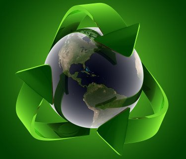

Actividades
iClean

En iClean nos interesa el cuidado del medio ambiente ya que sabemos
que es nuestro mundo y el mundo de nuestros hijos el que esta en juego.
Es por eso que en este proyecto mostraremos las actividades que
realizaremos a lo largo de esta iniciativa.
El cuidado del ambiente requiere la participación de ciudadanos organizados y conscientes de temas como el calentamiento global, la disposición de agua, la deforestación, los patrones de producción y consumo, así como los principios y valores que sustentan a esta sociedad.
A partir de actividades cotidianas como transportarnos, asearnos, viajar, cocinar o comprar productos, y los impactos de éstas en el ambiente, es importante reflexionar en nuestros hábitos de consumo y actitudes hacia el cuidado y protección del ambiente.
En nuestra casa, trabajo, comunidad o escuela podemos iniciar actividades concretas para mejorar el entorno. Para lograrlo necesitamos observar nuestro alrededor e identificar alternativas menos dañinas al ambiente, cambiar conductas y tomar decisiones basadas en el mejoramiento de la calidad de vida.
Te invitamos a utilizar y enriquecer este material con tu creatividad y experiencia para fomentar una cultura ambiental en todo el país.
Hoy en día, el efecto invernadero y el recalentamiento global se han convertido en problemas de impacto mundial; debido al mal uso que el hombre ha hecho de los recursos naturales. En este sentido, las empresas han dedicado parte de sus esfuerzos a la implementación de políticas ambientales y a la realización de actividades que tienen influencia en la preservación de la naturaleza de las comunidades cercanas.
A continuación se exponen diversas ideas para minimizar los agentes contaminantes en los sitios de trabajo:
1.- Desconectar los aparatos electrónicos cuando no se estén usando. Por ejemplo: Computadoras, microondas, aires acondicionados, fotocopiadoras, impresoras, etc…
2.- Apagar las luces cuando se esté ausente de la oficina. Utilizar focos ahorradores de luz; éstos son más caros que los normales; pero duran hasta 8 veces más y consumen la quinta parte de la energía para dar la misma cantidad de luz que un bombillo normal.
3.- Procurar utilizar pilas recargables o enchufar los aparatos a la red eléctrica. Si es inevitable el uso de pilas desechables, éstas no deben estar revueltas entre la basura. En lugar de ello, sepárelas y colóquelas en un recipiente aparte; ya que contienen sustancias químicas que son tóxicas.
4.- Usar racionalmente el agua. Utilizar el agua caliente sólo de ser necesario. Instalar un filtro o garrafón de agua para ahorrar las botellas. No dejar las llaves abiertas para evitar el despilfarro, arreglar las goteras, reparar inmediatamente cualquier fuga y de ser posible reinvertir el agua para otras actividades.
5.- Manejar menos y utilizar el transporte público. Otra buena opción, es caminar o usar otros medios de transporte que no contaminen. En caso de que sea imprescindible salir en el automóvil para ir al trabajo, compártelo con otros compañeros o vecinos.
6.- Preguntarse si realmente se necesita un producto, antes de comprarlo. Cualquier consumo que no sea imprescindible es anti-ecológico. En caso de que este artículo sea indispensable, procure adquirir productos que contaminen menos el medio ambiente.
7.- Reflexionar antes de arrojar cualquier cosa a la basura y verificar si se puede reutilizar, reciclar, reparar o si puede ser útil para otra persona.
8.- No derrochar artículos desechables como: servilletas, pañuelos, papel higiénico, etc…
9.- Sustituir los vasos de plástico y cartón, los cuales son desechables, por tazas de cerámica o porcelana o vasos de vidrio que se puedan volver a emplear en otra ocasión.
10.- Evitar usar envolturas de plástico y/o aluminio (Latas); en su lugar, utilice recipientes reusables o envases retornables.
11.- Disminuir la cantidad de impresiones. En vez de apretar el botón de “imprimir” automáticamente, piense en si necesario tener esa información en una hoja de papel. Asimismo, se pueden utilizar otros medios alternativos como el correo electrónico o los SMS para enviar un mensaje o también se puede guardar la información en la memoria del computador; si se desea almacenar.
12.- Otra manera de ahorrar papel, consiste, en colocar anuncios de interés general en una cartelera destinada para ello; en vez de imprimirlos o fotocopiarlos de forma individual.
13.- Aprovechar el papel: Si se tienen hojas que ya no se vayan a utilizar y que estén escritas o impresas por un sólo lado; es recomendable aprovecharlas usando el lado que está limpio para hacer anotaciones, elaborar borradores o imprimir documentos no oficiales o de carácter informal.
14.- Separar la basura, organizarla selectivamente y colocarla en los lugares que están destinados para su reciclaje. Entre los materiales que se pueden reciclar, para ser posteriormente reutilizados están: Papel, cartón, chatarra, metal, pilas, baterías, pintura, aceite, plástico, vidrio, materia orgánica, medicamentos, equipos informáticos, cartuchos, celulares, etc…
15.- Utilizar lo menos posible los ambientadores; ya que éstos no eliminan los malos olores sino que desprenden otros más fuertes que nos impiden detectar los anteriores.
16.- Evitar el uso de aerosoles; ya que contienen agentes químicos y gaseosos causantes de la destrucción de la capa de ozono y que contribuyen al efecto invernadero. Una buena opción son los pulverizadores; los cuales son recargables.
17.- Al comprar productos de limpieza, es importante leer las etiquetas de los productos para poder elegir aquellos que sean biodegradables.
18.- Reutilizar las bolsas de plástico.
19.- Asegurarse de no usar plásticos que sean PVC (Productos de Cloruro de Polivinilo); porque contaminan el ambiente durante todo su ciclo de vida. Incluso, cuando están siendo usados artículos elaborados con PVC se pueden desprender de ellos químicos tóxicos. Entre los productos que contienen PVC están: Los pisos, el mobiliario, el plástico para envolver, los marcos de las ventanas y otros materiales de construcción.
20.- Participar y organizar campañas comunicacionales para mantener informadas a las personas sobre los problemas ambientales y concientizarlas acerca de la protección y el cuidado al medio ambiente.
Dados estos seguimientos lograremos obtener un avance a gran escala
sobre la naturaleza y el bienestar de todos los seres vivos.
TODOS TIENEN EL DERECHO A DISFRUTAR DE UN MEDIO AMBIENTE ADECUADO PARA EL DESARROLLO DE LA PERSONA, ASÍ COMO EL DEBER DE CONSERVARLO.